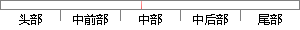

采用不同优先级的方式，每个任务都拥有一个不同的优先级，因此，可以把任务的ID号等同于优先级号。
片段位置图

相似结果
相似片段：在大多数的基于优先级的抢占式多任务实时操作系统中,采用的都是固定优先级方式,每个任务在创建的时候由系统的设计者赋予一个明确的与其它任务不同的优先级,用任务...
| 标题 | 《实时操作系统任务调度策略的研究与设计 - 豆丁网》 |
| 对比库 | PaperRater云论文库 |
| 网址 | http://www.docin.com/p-388027306.html |
| 相似率 | 69.44% （轻度抄袭） |
※ 片段修改建议 ※
近似词参考：- 拥有：具有
- 任务：使命 义务
- 方式：体例 体式格局 方法
- 因此：是以 因而
- 每个：每一个
- 不同：分歧 差别
- 采用：采取 接纳 采纳
系统自动生成语句： 采取分歧优先级的体例，每一个使命都具有一个分歧的优先级，是以，可以把使命的ID号等同于优先级号。
注：本片段修改建议为系统自动生成，仅供参考。